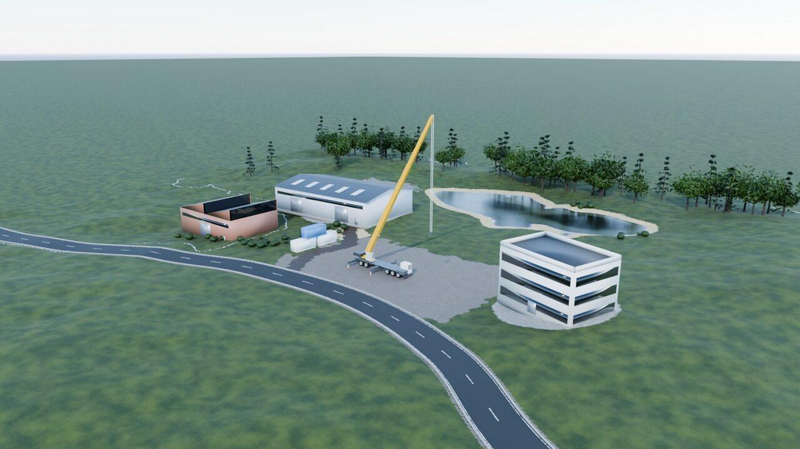
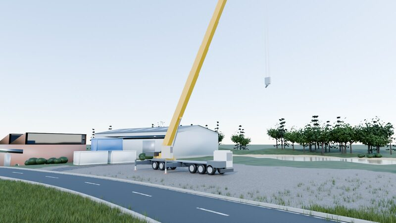
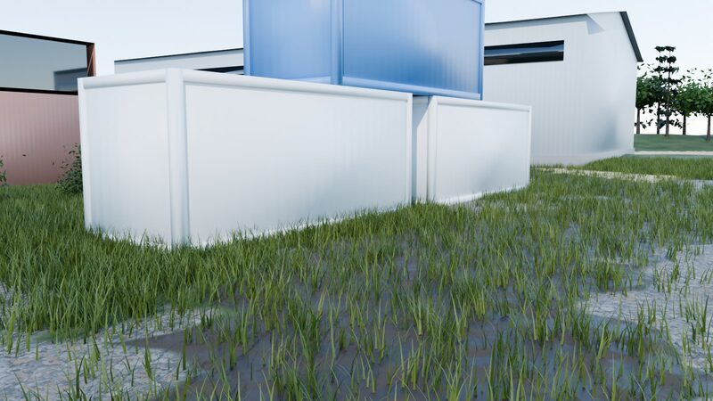
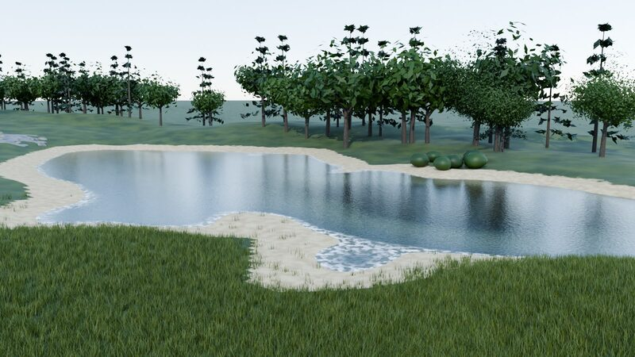
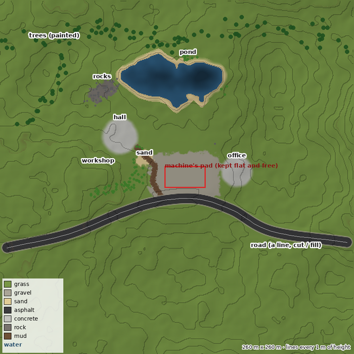
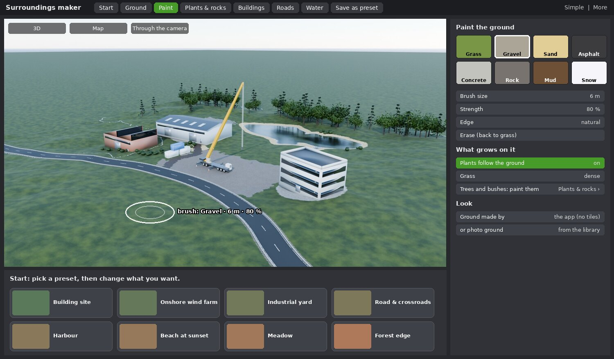
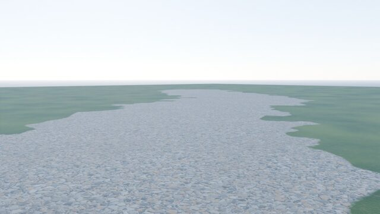
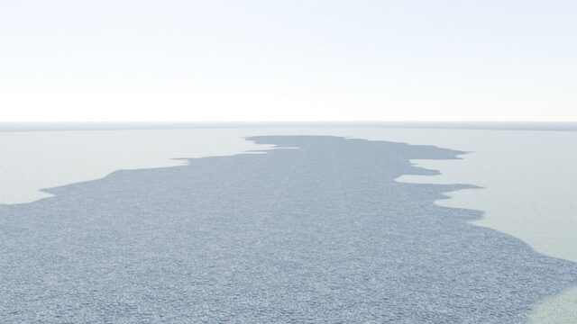
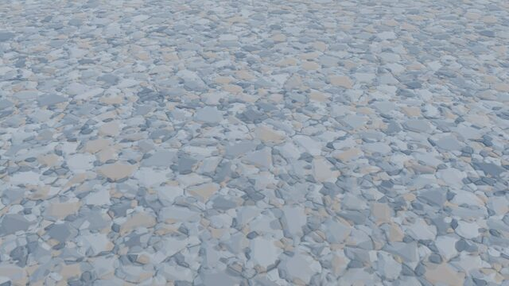
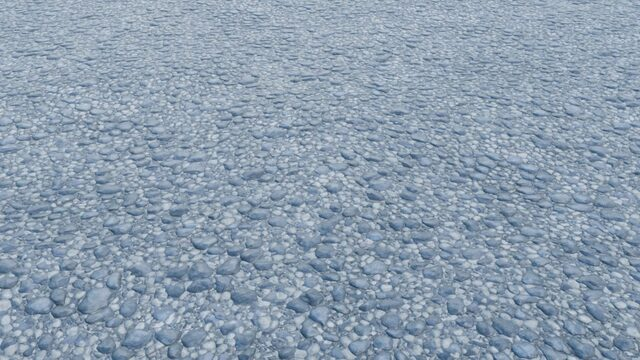

A surroundings maker and new ready-made backgrounds (study 0311)
Three findings decide the design. Copies, not merged meshes: grass as copies of one clump costs 9 MB more render memory than no grass; the same grass merged into one mesh costs 181 MB more. Make only what the scene camera sees: on the crane close-up that is 7,772 grass clumps instead of 88,085. Brushes must not re-place the plants at every dab: today that costs 0.12–0.16 s a dab. Re-place them only when the brush is lifted.
Procedural ground (the app's own, no pictures) against scanned ground (free ambientCG photos): the scan looks more real close up (gravel) and rendered twice as fast on the processor, but used about 100 MB more memory and repeats at a distance. Recommendation: the app's own ground by default, photo ground as an option from the asset library (0286).
Phase 1 (quick, before the maker): six new one-click backgrounds built the way today's are – Building site, Onshore wind farm, Industrial yard, Road & crossroads, Harbour basin, Meadow. Then the maker in 6 build tasks, then 4 more. Tick what you want at the bottom. ★ = recommended.
Measured on the web machine: 4 cores, no graphics card, Blender 5.2.3 as a Python module, Cycles on the processor. Everything
said about your RTX 3090 is an expectation, not a measurement. Code: tools/surroundings_proto/ on this task's branch.
1 · The prototype





Clips
2 · The maker (design)

| Part | How it works (tried in the prototype unless it says "design") |
|---|---|
| Terrain | One height grid (0.5 m; 260 × 260 m = 271,441 points). Brushes Raise, Lower, Smooth, Flatten; Hills; Import a height-map picture, GeoTIFF or mesh (design). The machine's pad stays flat at the floor and free, and blends into the hills. Brushes are the app's own tool, not Blender's Sculpt mode: no mode switch for a sales person, the Client view's lock stays simple, and the same strokes give the same ground in tests. Pen pressure comes with Blender's mouse events. |
| Paint layers | Grass, gravel, sand, asphalt, concrete, rock, mud, snow. The weights always add up to 1: painting gravel makes the others give way, and Erase means back to grass. The brush edge is broken up by noise, and once more in the material, so no round stamps show. The layers are stored with the terrain mesh, so they are saved and undone like the rest; one material reads them, with no pictures. |
| Scatter | One Geometry Nodes tree for every kind. Painted density × what the ground allows: grass only on grass, trees not on asphalt, nothing on the pad, under water or on the road. Each plant is a copy. Each kind has a detailed version near the camera and a light one beyond 30–70 m. Nothing is made outside the scene camera's view, and grass thins out between 15 and 45 m. Turning the 3D view with the mouse costs nothing; only moving the scene camera places the plants again. Grass, trees, bushes and rocks are made by the app: real size, two versions from one seed, no licence question. Scanned rocks and the user's own plants come later through the asset library (0286). |
| Buildings | Hall, office, house, warehouse (design), site hut (the app's containers); width, depth, floors, roof (pitched, flat, saw-tooth), windows, colour. One facade material for every building: the colour is each building's own setting, read by the material, not a new material. A painted colour band on a facade, and the building flattening its footprint and painting its concrete apron: design. |
| Roads | A line of clicks; width and kind; markings in the material (dashed centre line, edge lines, worn); kerbs. The terrain is cut and filled to a smooth profile with at most 6 % grade and 4 m shoulders, the plants are cleared, gravel shoulders are painted. Crossroads: design. |
| Water | Pond / lake: a point and a level; the water fills only what connects to that point, not every low spot (the first try flooded the whole site). Sea: today's sea, its shore where the terrain dips under it (design). River: a line that carves a bed (design). The shore paints itself. Hand-over to 0312 (breaking waves): the water depth on the grid and the shore line; waves break where the depth is about 1.3 × the wave height. |
| Presets | Terrain, roads, buildings, water, plants, light and weather in one file, kept in 0272's folders as a new kind
"Surroundings" (My / Department / Company, shared in a .frsetup). The ready ones are made in code and fit the machine: the pad
follows its box. |
| Vehicles (0306) | One terrain for both: a speed bump is a Raise stroke, an off-road track is Lower + Mud; the wheels read height and slope from the same grid. |
3 · Cost and speed (measured)
| What | Measured |
|---|---|
| Build the whole site (terrain, paint, road, pond, buildings, sources of the plants) | ≈ 3 s; brushes on a window round the brush: all strokes 1.8–2.0 s (11.7 s on the whole grid each time) |
| Place every plant (Geometry Nodes) | 0.05–0.27 s |
| One brush dab (raise) with grass in view | 0.16–0.20 s: arrays 0.3 ms, mesh written 41–58 ms, plants placed again 0.12–0.15 s |
| One dab painting trees | 0.14–0.18 s (plants again 0.12–0.16 s) |
| The scene camera moves (plants follow its view) | 0.11–0.14 s |
Grass at ground level (960 × 540, 32 samples)
| Grass | Blades in view | Render | Render memory | Blender in all (peak) |
|---|---|---|---|---|
| none | – | 41.9 s | 181 MB | 1,335 MB |
| copies of one clump | 258,224 | 42.9 s | 190 MB | 1,434 MB |
| merged into one mesh | 258,224 (1.55 M triangles) | 39.9 s | 362 MB | 2,068 MB |
| copies, density × 4 | 1,032,608 | 50.2 s | 218 MB | 1,461 MB |
| merged, density × 4 | 1,032,608 (6.2 M triangles) | 36.1 s | 890 MB | 3,032 MB |
Culling and light versions (640 × 360, 16 samples)
| View | Run | Made | Render | Render memory |
|---|---|---|---|---|
| whole site | culling + light versions | 42 trees, 29 conifers, 44 bushes, 18 rocks | 11.6 s | 160 MB |
| whole site | no culling | 52 / 35 / 44 / 18 | 11.6 s | 160 MB |
| whole site | no light versions | 42 / 29 / 44 / 18 | 11.7 s | 172 MB |
| crane close-up | culling + light versions | 31 / 24 / 37 / 18 + 7,772 grass clumps | 6.3 s | 164 MB |
| crane close-up | no culling | 52 / 35 / 44 / 18 + 88,085 grass clumps (1.4 M blades) | 6.9 s | 210 MB |
| crane close-up | no light versions | 31 / 24 / 37 / 18 + 7,772 | 6.5 s | 176 MB |
A 4K frame
The whole site (the first picture's view) at 3840 × 2160, 128 samples (the app's "preview"), processor only: 23 min 28 s, render memory 602 MB, Blender's peak 5.1 GB. On the 3090 Cycles is usually many times faster than on 4 processor cores: expect minutes, not tens of minutes – an expectation, not measured. The picture (scaled down).

- Copies, never merged. A million blades as copies: 218 MB render memory; merged: 890 MB and 1.6 GB more in Blender as a whole. Merged rendered faster on the processor (36 s instead of 50 s), but memory is what limits a big scene on a graphics card – on the 3090's 24 GB the copies leave room for far more (expected, not measured).
- Culling pays where the camera sees a part of the site (close-ups, eye-height shots): 11 × less grass. Seen from far away, where the camera sees everything, it changes nothing. Snag: what is culled casts no shadow into the picture and shows in no reflection; trees just outside the frame on the sun's side need a margin. The prototype uses 8 m for trees; the build task keeps everything within about 30 m.
- Light versions saved only 12 MB on a site with under 150 plants. They are for forests and wind farms with thousands of trees, and for the 3D page; expected, not measured on such a site.
- Brushes. 5–6 dabs a second with the plants placed again each time is too slow to paint smoothly. During a stroke only the ground changes; the plants follow when the brush is lifted. The terrain is split into tiles of about 32 m, and a dab writes only the tiles it touches: about 1 ms instead of 42–58 ms (design, from the measured full-mesh write).
- Live preview. The app's Live preview (Cycles in the 3D view) is not measured here; this machine has no graphics card, and EEVEE took 33 s for one 640 × 360 picture of a single cube in software. Because the plants follow the scene's camera, not the 3D view, turning the view never places them again. Moving the camera does: 0.11–0.14 s, and then Cycles builds its scene again.
- Animations with a moving camera place the plants again every frame (0.1–0.3 s a frame here, small next to the render). Option: cull by the whole camera path once.
What can go on the 3D page
| Part | Size of the .glb |
|---|---|
| Terrain on a 1 m grid (68,121 points) | 3.7 MB |
| Terrain on a 2 m grid (17,161 points) ★ | 735 kB |
| Terrain on a 4 m grid (4,356 points) | 187 kB |
| 43 trees, light version (2,465 triangles each) as GPU copies – the mesh is stored once | 133 kB |
Not counted: the ground baked to a picture (0099's baker; a 2048 px JPEG over 260 m is 13 cm a pixel, about 1–2 MB – expected). Grass blades stay off the page; the baked ground shows them. The page needs three.js's InstancedMesh for the copies (a Web 3D task).
4 · Ground materials: made by the app or scanned photos (point D)
The same flat field (grass, a painted gravel strip with a natural edge), the same two views, 960 × 540, 64 samples. Scanned: ambientCG Grass004 and Gravel017, 2048 px colour / normal / roughness (CC0, taken from a CC0 mirror on GitHub; ambientcg.com itself was not reachable from this machine), tiled every 2 m, flat projection.




| Made by the app | Scanned (2 K) | |
|---|---|---|
| Render, eye height / closer | 46.1 / 65.0 s | 23.2 / 27.8 s |
| Render memory | 149 MB | 253 MB (6 maps × 16 MB as Cycles holds them = 96 MB) |
| Files | none | 37 MB for two grounds (JPEG); 4 K would be ×4, 8 K ×16 |
| Look close up | gravel reads as flat, angular pieces | real rounded stones, real roughness |
| Look far away | no repeats | repeats every 2 m show as a pattern unless broken up |
| Colour per project, painted edges, wet / snow (0109) | all settings | edges and wet yes; its colour is the photo's |
| 3D page | baked to a picture by 0099's baker | the picture itself |
Recommendation: keep the app's own ground as the default: no files, no repeats, any colour, and every layer paintable. Add photo ground per layer as an option from 0286's library (CC0: ambientCG, Poly Haven), with the repeats broken up (each tile turned at random, mixed with the app's own large-scale variation). That suits gravel, rock and close-up shots. The procedural gravel was the slowest part here: four Voronoi lookups a point. The build task makes a cheaper one (or bakes it to a picture once) and measures it on the 3090.
5 · New ready-made backgrounds (point A)
| # | Background | Who needs it | What it holds | Phase 1 from today's pieces? |
|---|---|---|---|---|
| 1 ★ | Building site | cranes, lifting plans, machines delivered | gravel, site fence, site huts (the containers stacked), barriers, pallets, skip, steel and rebar stacks | yes (+ gravel material) |
| 2 ★ | Onshore wind farm | wind, cranes (blade lift) | meadow, crane pad, access road, turbines at real size from demo_model/turbine.py's shapes, a blade on its transport | yes (+ grass, gravel, asphalt materials; turbines as Loft shapes) |
| 3 ★ | Industrial yard | machines, vehicles, lifting | asphalt yard with lines, a hall from outside, fences, containers, pallets, lamp posts | yes |
| 4 | Road & crossroads | vehicles (0306), transport | 2-lane road, markings, kerbs, pavement, lamp posts, a crossroads, grass verges | yes (straight pieces; curves need the maker) |
| 5 | Harbour basin | cable lay, loading | today's quay on two sides, the sea between, fenders, a moored work boat as shapes | yes (extends Quayside) |
| 6 | Meadow | a neutral outdoor ground | grass ground to the horizon, a far tree line | ground yes; grass blades and trees need the maker |
| 7 | Beach / landfall | cable landfall, vessels (0312) | sand sloping under the sea, dunes, a foam line | partly; breaking waves are 0312's |
| 8 | Forest edge | product shots, vehicles | trees, bushes | no (maker) |
| 9 | Snow | anything in winter | = Meadow or Building site + 0109's snow weather | yes, through the weather |
| 10 | Desert | rarely | sand, dunes | after the maker |
6 · Build tasks – tick what you want
Lanes: phase 1 is the Scene & Render lane (it owns the world part of surroundings.py); a beach shares the sea with
the Sea lane. The maker gets a new Surroundings maker lane with new files (core/terrain.py, core/plants.py,
core/buildings.py, core/roads.py, blender/terrain.py, ops_terrain.py,
ui_terrain.py) and one additive kind "Made" in surroundings.py.
★ P1 · Six new backgrounds Phase 1 · Scene & Render lane · Opus · Medium
P2 · Beach / landfall Phase 1 · Sea lane · Opus · Medium · after 0312's picks
★ M1 · The maker window, terrain, paint layers, Map view Phase 2 · new lane · Opus · High
core/terrain.py (from the prototype), terrain in 32 m tiles, the app's own brushes with a circle on the ground, 8 layers,
one ground material, the pad, Simple | More.★ M2 · Plants and rocks Phase 2 · Opus · High · after M1
★ M3 · Roads Phase 2 · Opus · High · after M1
★ M4 · Buildings Phase 2 · Opus · Medium · after M1
★ M5 · Water: pond, lake, river, sea shore Phase 2 · Opus · High · with the Sea lane
★ M6 · Presets and saving Phase 2 · Opus · Medium · after M1–M5
M7 · Photo ground from the library Phase 3 · Opus · Medium · after 0286's build tasks
M8 · The surroundings on the 3D page Phase 3 · Web 3D lane · Opus · Medium
M9 · Import a terrain; bumps and tracks for Vehicles Phase 3 · Opus · Medium · with 0306
M10 · Seasons and wind Phase 3 · Opus · Medium
Made with: tools/surroundings_proto/ – terrain.py (heights, brushes, layers, road cut and fill, flood
fill), shapes.py (trees, conifers, bushes, grass, rocks, buildings), scene.py (the Blender scene, materials,
Geometry Nodes scatter), measure.py, clips.py, sketch.py. Ground photos: ambientCG (CC0).